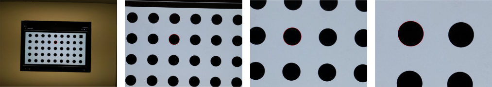
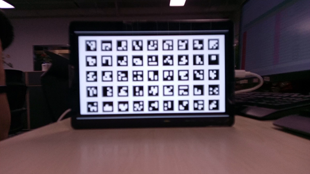
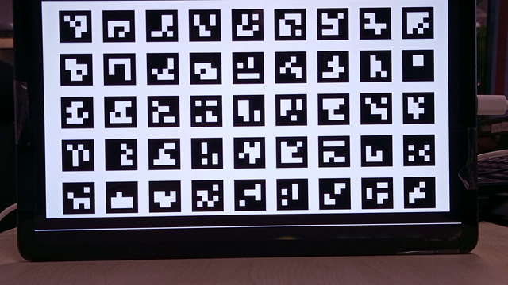
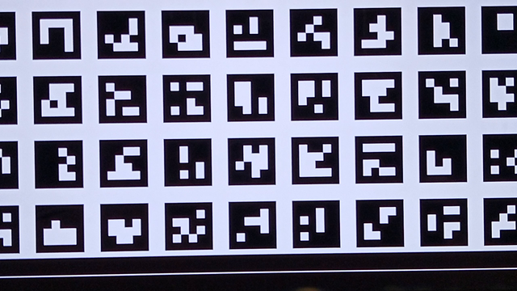
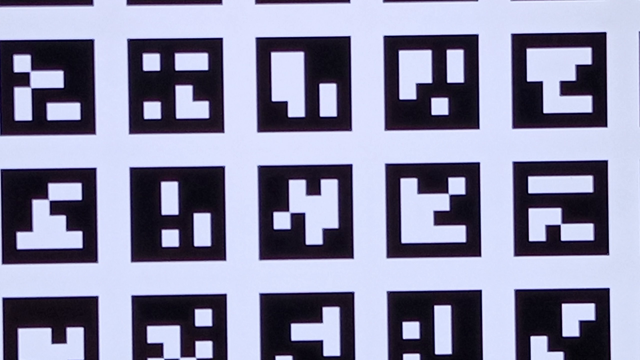
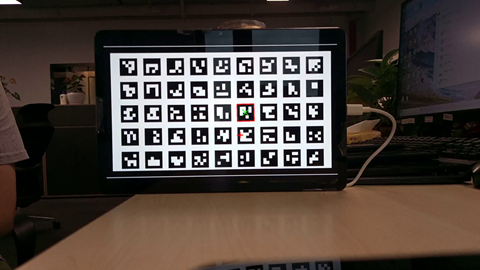
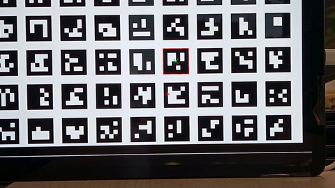
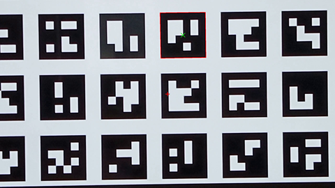
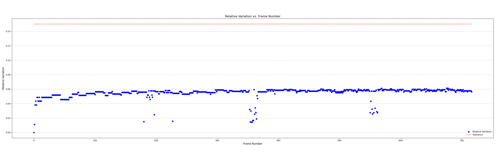
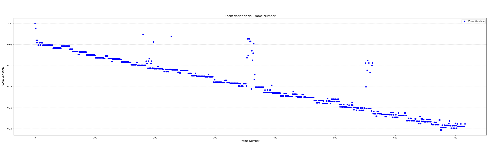

test_preview_zoom.py
测试项描述
预检查项
支持
android.control.zoomRatioRange的设备参与测试。
测试内容与目标
Android 16+ 版本描述：
测试每个预览帧的缩放比例是否与从超广角镜头到广角镜头的相应捕获元数据匹配。
该测试会在变焦范围内拍摄预览帧，并查找最接近画面中心的 ArUco 标记。 随后测试会检查中心标记的位置是否随每次捕获发生预期的变化。 中心标记的中心到画面中心的距离可能会以与缩放比例成恒定速率变化（直至发生物理镜头切换），或者在物理镜头切换后单调地趋近于同一标记的位置。
通过条件： 所选 ArUco 标记的相对尺寸与所有预览帧对应的捕获结果所报告的缩放比例相符。 所选标记与画面中心的相对距离与所有预览帧对应的捕获结果所报告的缩放比例一致。
test_preview_zoom 图像，显示与中心最接近的所选标记：
测试的 API：
android.hardware.camera2.CameraCharacteristics#CONTROL_ZOOM_RATIO_RANGE
android.hardware.camera2.CameraCharacteristics#LENS_INFO_AVAILABLE_FOCAL_LENGTHS
Android 15 版本描述：
测试每个预览帧的缩放比例是否与相应的拍摄元数据相符。 该测试会在变焦范围内拍摄预览帧，并查找与中心最接近的圆圈的轮廓。 随后，该测试会检查所选圆圈是否变大，以及圆圈的中心是否会随着相机拉近而远离图像中心。
通过条件： 对于所有预览帧的相应拍摄结果的报告缩放比例，所选圆圈的相对大小是准确的。 对于系统针对所有预览帧的相应拍摄结果报告的缩放比例，所选圆圈与图像中心的相对距离是准确的。

测试的 API：

[孙海鑫 记录于 2025.10.31]
历史问题
项目 |
X1201 |
解决者 |
zhangyue |
备注 |
X1102M1201-1005 孙海鑫 记录于 2025.06.23 |
异常描述 |
ERROR Max zoom ratio 4.6735 in capture results not close to 10.00 and z_max-step = 9.82 by 0.02 tolerance.
|
异常原因 |
后摄 |
解决方案 |
在 CONFIG_METADATA_BEGIN(MTK_SCALER_AVAILABLE_MAX_DIGITAL_ZOOM)
CONFIG_ENTRY_VALUE(4, MFLOAT)
CONFIG_METADATA_END()
|
关联Case |
|
更多信息 |
项目 |
X1201 |
解决者 |
zhangyue |
备注 |
X1102M1201-1005 孙海鑫 记录于 2025.06.23 |
异常描述 |
详见分析过程。 |
异常原因 |
测试项选择到不受支持的异常视频编码尺寸（1920x1920）进行预览和视频录制，硬件编码异常出现内存泄露导致 CTSV 进程被 Kill。 |
解决方案 |
修改 metadata 中 1920x1920 尺寸的 frameduration 使该尺寸不可用于预览: vendor/transsion/itd/vendor_vnd/imgsensor_metadata/metadata_scaler_tablet/transsion_5M_ext_scaler.h
CONFIG_METADATA_BEGIN(MTK_SCALER_AVAILABLE_STREAM_CONFIGURATIONS_WITH_DURATION)
CONFIG_ENTRY_VALUE(HAL_PIXEL_FORMAT_BLOB, MINT64)
CONFIG_ENTRY_VALUE(1920, MINT64)
CONFIG_ENTRY_VALUE(1920, MINT64) // width height
CONFIG_ENTRY_VALUE(MTK_SCALER_AVAILABLE_STREAM_CONFIGURATIONS_OUTPUT, MINT64)// output
CONFIG_ENTRY_VALUE(100000000, MINT64) // frame duration (原为 33333333)
CONFIG_ENTRY_VALUE(33333333, MINT64) // stall duration
CONFIG_ENTRY_VALUE(HAL_PIXEL_FORMAT_BLOB, MINT64)
CONFIG_ENTRY_VALUE(1920, MINT64)
CONFIG_ENTRY_VALUE(1920, MINT64) // width height
CONFIG_ENTRY_VALUE(MTK_SCALER_AVAILABLE_STREAM_CONFIGURATIONS_OUTPUT, MINT64)// output
CONFIG_ENTRY_VALUE(100000000, MINT64) // frame duration (原为 33333333)
CONFIG_ENTRY_VALUE(0, MINT64) // stall duration
CONFIG_METADATA_END()
需要 |
关联Case |
|
更多信息 |
分析过程：
|


项目 |
GH67J2 |
解决者 |
sunhaixin |
备注 |
368718 孙海鑫 记录于 2025.10.24 |
异常描述 |
AssertionError: No shared ArUco marker found across all captures.
|
异常原因 |
Zoom 放大之后无法识别到 ArUco 标记。     |
解决方案 |
20251013 早上自测 PASS，猜测可能与 FOV 修改 （大概率）或者测试手法和环境有关（测试手法和环境备注：DUT 距离图卡大约25cm，图卡在预览的正中心）。      |
关联Case |
|
更多信息 |